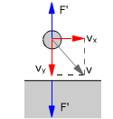

Choque oblicuo con pared o suelo  En general la velocidad tendrá una componente normal al suelo y otra tangencial. La fuerza de contacto modifica la componente normal que se anulará o invertirá mientras que la componente tangencial no cambiará Método Se toma uno de los ejes en la dirección normal a la superficie Aunque el momento lineal se conserva, no se saca nada aplicando la ecuación correspondiente porque el momento lineal del suelo es indeterminado Hay que aplicar la condición de conservación de la componente tangencial de la velocidad
v·sen α = v'·sen α'
Hay problemas donde basta con plantear la conservación de la componente
tangencial de la velocidad para poder obtener las incógnitas. |